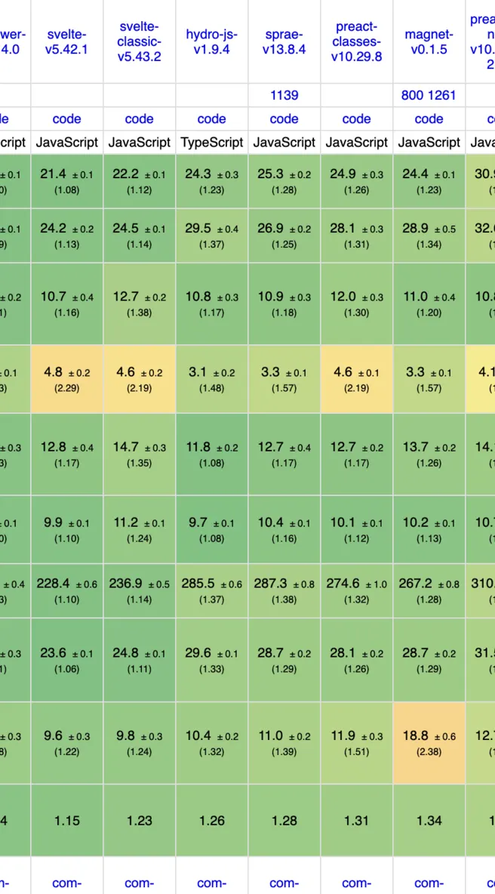

Keep your HTML.
Add reactive attributes in place. No component rewrite or required build step; server components stay server-side.
Sprae evaluates :attributes and evaporates them, live binding DOM
NOT A FRAMEWORK
Add reactive attributes in place. No component rewrite or required build step; server components stay server-side.

No virtual tree or diff. Published CPU runs place Sprae ahead of Vue, React, and Alpine; Svelte remains a fast peer.
sprae() returns live state. Keep the built-in core or use any Preact-compatible implementation.
Sprae is ~1.5× smaller, ~2.3× faster, and uses ~3× less runtime memory in this comparison. It has pluggable signals, built-in modifiers, event chains, and a full-JS CSP build. Migrating? See the Alpine guide.
In the official js-framework-benchmark (Chrome 150), sprae places ahead of Vue, Preact and React in CPU speed, at 11.6kb compressed, with no build step or virtual DOM. In JSX, it adds client-side interactivity without 'use client'.
The CSP build interprets JavaScript expressions without eval or new Function — bundle it locally for Chrome MV3 extensions. It supports full expressions, arrow functions included, unlike Alpine's CSP build.
new Function unsafe?new Function executes directive expressions as JavaScript. Use the default build only with trusted markup; under strict CSP, use the CSP build.
Use define-element for declarative web components, or any custom-element library — sprae treats a custom element as a boundary and sets its props. For simpler cases, manage duplication with templates or includes.
State uses plain reactive objects. For complex apps, use store with computed getters and methods, or swap in any Preact-compatible signals.
Full types included. Runs in any browser with Proxy — all modern browsers, no IE.
Sprae has 3+ years of releases across ~200 npm versions. It has no dependencies or open issues, and its tests include the CSP build.